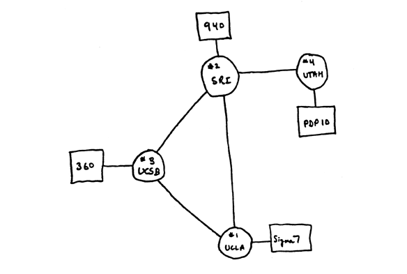
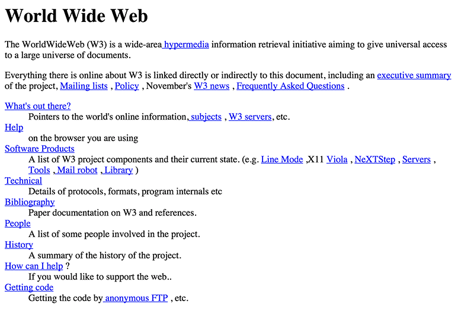

Origins of the Internet
Defense Advanced Research Projects Agency (DARPA) needed:
- to share computer resources
- secure communications in a crisis (i.e. nuclear war)
The project resulted in ARPANET, a four-node network unveiled in 1969.
ARPANET, 1969
- University of California, Los Angeles
- Stanford Research Institute
- University of California, Santa Barbara
- University of Utah
'lo' and Behold!
The first message transmitted on ARPANET:
lo
It was supposed to be login, but the computer crashed.
Beyond ARPANET
- 1981: Grew to 213 host computers
- 1985: Evolves into NSFNet — the Internet's backbone
- 1990: ARPANET decommissioned
- 1995: NSFNet decommissioned; commercial traffic permitted
ARPANET lessons
- Standard communication protocols
- Transmission Control Protocol (TCP)
- Internet Protocol (IP)
- Applications
- File Transfer Protocol (FTP)
TCP
- Computer A breaks a file into packets, attaches metadata
- Packets are sent over a network to Computer B
- Computer B reassembles packets, verifies the file is correct
If the file is incomplete, Computer B refers to the metadata as if it were a checklist and request Computer A re-send the missing packet.
IP
- Determines the path across a network which packets travel
- Provides each node with a unique address
A node may be anything connected to a network, in this case, the Internet.
Every device in the world (circa 2014)
IP Addresses
- Identifies location on the Internet and geographically
- What is your IP address?
Domain Names
- A directory for the Internet
- Each domain is mapped to an IP address
A Domain Name Server (DNS) routes requests to the correct IP address.
Anatomy of a Domain Name
www.google.com
- com: top-level domain
- google: domain
- we can reserve these for our own use
- www: subdomain
- optional
- used to point one domain to multiple servers
Combined, these create a fully qualified domain name.
Getting a domain name
- Obtained through a domain name registrar
- Fees very depending on name, registrar
- Country codes (i.e.
.us) may have limitations - Minimum one-year lease
- No one 'owns' a domain
Hypertext
A software system which links information.
Hyperlinks are reference points which connect an element (word, phrase, image) to another document providing more information.
Origins of the Web
The World Wide Web (WWW) is an Internet-based hypertext system.
- 1989: Proposed by Sir Tim Berners-Lee & Robert Cailliau
- 1991: Software released to public
- Aug. 1992: 26 web sites
- Dec. 1993: 632 web sites
The First Site
WWW Lessons
- URL: Uniform Resource Locator
- HTTP: Hypertext Transfer Protocol
- HTML: Hypertext Markup Language
URL
- A unique address for a file on the web
- No two files can have the same URL
- Two parts:
- How is the file transferred (
httporhttps)? - The location of the file
- How is the file transferred (
HTTP
- A browser requests a file from a serve.
- The server acknowledges the request, sends a response:
- 200: Okay! (file is sent)
- 404: File not found
- 500: Server error (URL may be right)
HTML
We will begin learning this next week.
Web Languages
- HTML: describes the structure, semantics of content
- CSS: presents content for different media
- JavaScript: influences behavior of the document
Web Standards
- Developed by the W3C
- Assures web sites are forward, backward compatible